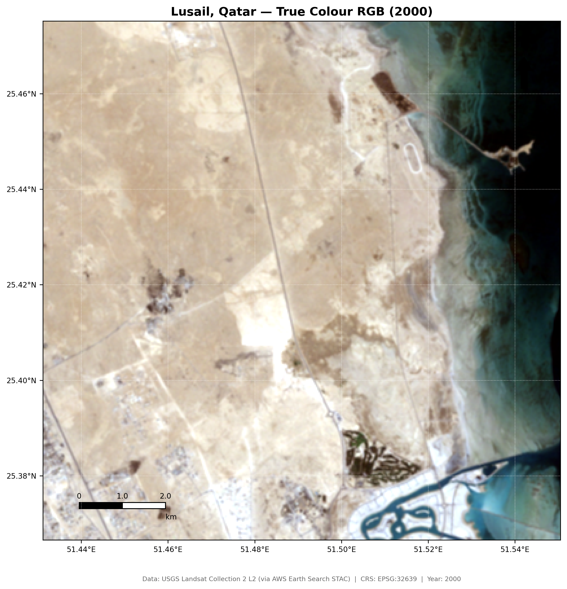
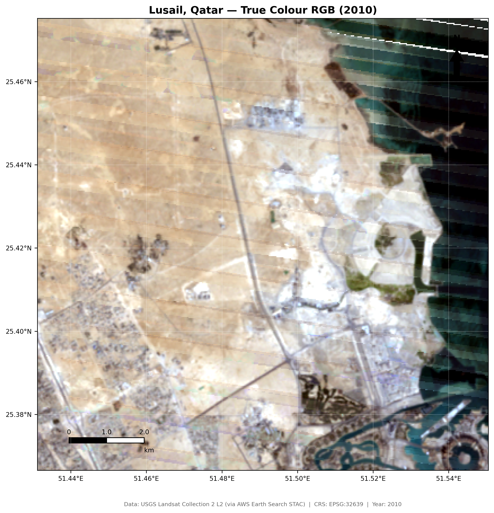
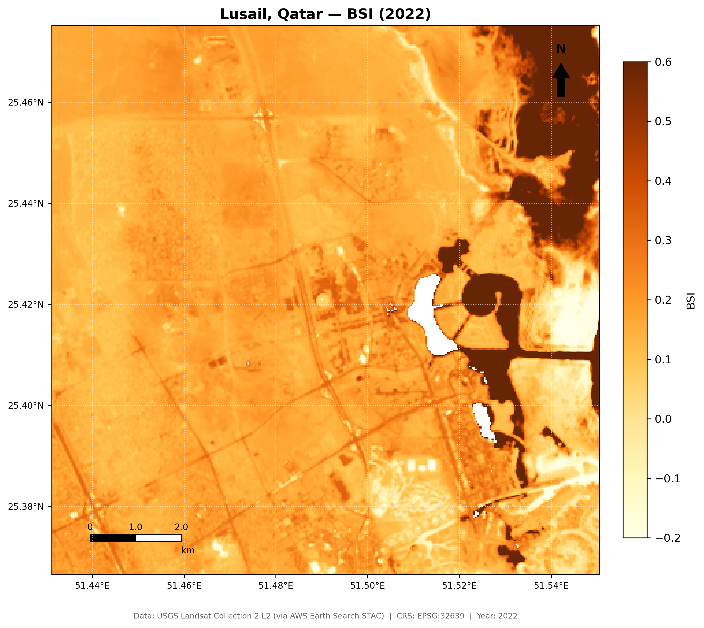

Lusail, Qatar
- 위치: 카타르 도하 북쪽, 루사일 스타디움 및 마리나 중심
- 분석 범위: 12 km × 12 km (약 144 km²)
- 핵심 랜드마크: 루사일 국제 스타디움, 루사일 마리나, 매립 인공섬, 미개발 사막 대조군
좌표계: UTM Zone 39N (EPSG:32639)
WGS84 경위도 좌표계는 각도 단위 → 면적 왜곡 심함
UTM 투영으로 30 m 격자의 등면적성 보장
셀 면적 = 30 m × 30 m = 900 m²
WGS84 경위도 좌표계는 각도 단위 → 면적 왜곡 심함
UTM 투영으로 30 m 격자의 등면적성 보장
셀 면적 = 30 m × 30 m = 900 m²
지역 선정 이유: 월드컵 전 원시 사막 → 개최 후 완성된 신도시라는 극단적 대비. 개발 전후 명확한 시점(2000·2010·2022)이 존재

▲ 2022년 루사일 지역 트루컬러 RGB 합성 영상
2000 → 2010 → 2022 트루컬러 합성 영상

2000년 — 원시 사막

2010년 — 개발 시작
2022년 — 신도시 완공
2000년
해안선 외 전체가 모래벌판인 원시 사막 상태. 인공구조물 전무
해안선 외 전체가 모래벌판인 원시 사막 상태. 인공구조물 전무
2010년
격자형 도로망과 기초 인프라 출현. 도시 구획 정리 시작
격자형 도로망과 기초 인프라 출현. 도시 구획 정리 시작
2022년
루사일 경기장·마리나·매립 인공섬. 고도로 개발된 도시 형태 뚜렷
루사일 경기장·마리나·매립 인공섬. 고도로 개발된 도시 형태 뚜렷

ΔNDVI (2000→2022) — 식생 증감
식생 증가: 스타디움 주변·도로변·골프장 중심으로 양(+)의 NDVI 변화 — 조경·녹화 사업 실증

ΔNDBI (2000→2022) — 시가지 증감
도시 급증: 신도시 중심부·마리나를 따라 NDBI 폭발적 상승 — 도시화·녹지화가 동시에 진행된 사막 개발의 전형적 패턴
💬 "월드컵은 90분 경기로 끝나는 이벤트가 아니라, 개최국의 도시 공간에 장기적으로 남는 유산이다. 루사일 사례는 메가 스포츠 이벤트가 도시개발 전략으로 작동함을 위성 데이터로 실증한다."

MNDWI (2022) — 수체 분포
수체 탐지: 연안 해수면과 새로 조성된 루사일 마리나 인공 운하를 파란색으로 명확히 지시 — 육지 내 수역 조성 실증

BSI (2022) — 나지/사막 분포
잔존 사막: 루사일 외곽 자연 상태의 나지와 사막. BSI 감소 자리를 NDBI·MNDWI 신호가 채워나감 — 개발 전선의 공간적 이동 확인